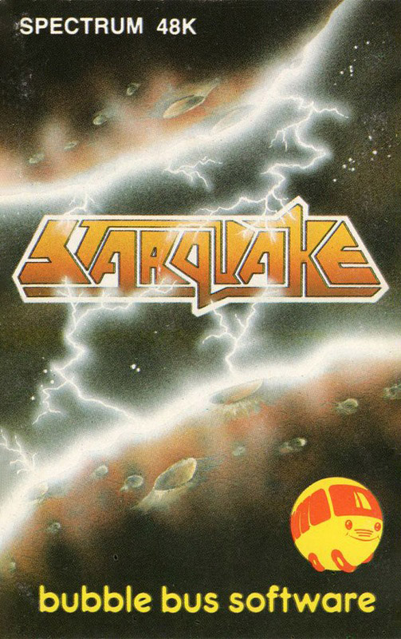
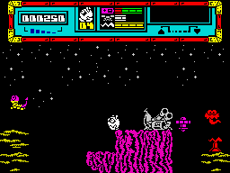
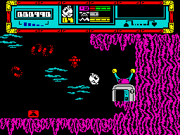

Starquake


{kind=link}

| Publisher: | Bubble Bus |
| Price: | £7.95 |
| Year: | 1985 |
| Source: | CRASH, Issue 22 |

Starquake from Bubble Bus sees the return of Steve Crow, programmer of the much acclaimed Wizard’s Lair. Starquake revolves around a small Bio-Logically operated being named Blob, who’s been landed with the menial task of saving the universe from a savage destruction.
An unstable and potentially dangerous planet is emerging from a black hole somewhere among the backwaters of the galaxy. The planet is so unstable that it’ll blow into a million fragments if its Planetary Core isn’t fixed. If the planet does go kaboom then the whole universe will go up too in a massive chain reaction: a Starquake. Blob has the job of rebuilding the planet’s core, thereby preventing disaster. You pick up the quest, controlling Blob, after his ship has crashlanded upon the planet in question.

The game is presented in age old arcade adventure style. The screens flip between each other with the majority of the action taking place in a cave system below the planet’s surface. Star of the show, Blob, is a creature of limited abilities who can go left and right and has a nice line in falling (for going down). Blob can go up too, using his platform laying device. Platforms can be used to prevent a fall or can be piled up to make a vertical stairway. One laid, they soon fade, however, crumbling to dust leaving Blob unsupported in mid air — unless he’s hopped onto more solid ground meantime.
Blob enters the subterranean caves with four lives, a few platforms in stock for his laying device, a gun and some ammunition. A status display at the top of the screen provides readings on the amount of ammunition left and the number of platforms available for laying. A bar display next to a battery icon indicates Blob’s energy level, which is reduced by collisions with the nasties. Should this dip below zero Blob expires and another droid has to be wheeled in. Packs of platforms, ammunition, and energy are scattered around the playing area, as are a few bonus lives. They are all picked up automatically as Blob runs over them. Collect supply packs to replenish stores, and the status display registers improvement! Other useful objects have to be deliberately picked up and are added to the limited inventory which Blob can lug around at any one time. The status display also reveals what’s been collected.

A veritable swarm of aliens inhabits the planetary caverns: contact with a nasty drains Blob’s energy and while the aliens can be discouraged with a blast from the laser gun, avoiding them is also a good tactic. The nasties are all intelligent — some a lot smarter than others — and come to get you if hang around. The further into the system you have penetrated, the smarter the nasties, it seems.
To rebuild the Planet’s Core you need to collect various items and take them to the planet’s centre. A teleport system has been supplied to help you move around the vast complex of locations by the thoughtful Mr Crow. Six teleports exist throughout the planet each with their own password. When you enter a teleport, it informs you of its teleport code and asks for a destination code so it can transport you to another teleport booth. The teleport network is handy, though the clever thing is it only comes into its own once you’ve travelled the caves and have found the codewords to the six teleports.
Space Hopper Pads are also available which can be used to fly about on — the snag is, Blob can’t pick up items while on a Pad, so frequent parking becomes a necessity. One-way transport in an upward direction is also provide by the Anti Grav Lifts. Decked out in a fetching green, the lifts can also provide a pleasant nasty-free haven as well as an effortless form of transport.
Barring your way to many essential core parts are security doors. To pass these barriers you’ll need the key code card corresponding to the code of the door you want to pass. If, by chance you find a Flexible Whatsit it’ll allow you pass any door but it’s not reusable. The key code cards and flexible whatsits also work on Cheop Pyramids. The pyramids can be used to trade items in your inventory for more useful objects.
A whole range of devices and objects are scattered around the game, including secret passages, zap-rays, space locks and weird and wonderful artifacts, including Smash Traps — small bridges spanning some of the minor gaps in the cave system. These bridges cannot be passed from underneath, but if jumped on from a great height they yield, breaking into little pieces and allowing free passage.
CRITICISM
‘This is one of the best games I’ve seen on the Spectrum for one hell of a long time. It has everything a brilliant game needs — superlative graphics, excellent sound, fabulous and unusual gameplay, real depth and addictive qualities. The game itself is really huge with heaps of screens to explore and map. There are also tons of alien things lying around which play an important part in the game and you have to discover what they do and how to use them. if you don’t buy this game then your Spectrum isn’t really being put to good use ... miss it at your peril.’
‘Why are Bubble Bus games so rare? Perhaps some of them have slipped through my sticky reviewing claws, but to the best of my knowledge they haven’t released a game since Wizard’s Lair which was ages ago. This game is an improvement on Wizard’s Lair, with better sound and graphics — it’s a lot more playable and addictive. There are so many different nasties that do different things to you that you lose track of which are the nastier nasties. All the graphics are very well animated with no attribute clash at all and the game is full of little tunes which are surprisingly good. I love all the little surprises built into the game and I’m completely addicted to Starquake. I can’t see myself putting it down until I’m convinced I can complete it.’
‘After the worthy Wizard’s Lair, Bubble Bus have surely come up with a worthy successor with Starquake. I’d definitely rate this as an all time great. Starquake’s main appeal lies with its design. It’s so well thought out. The graphics are very good indeed, both the movement and backgrounds. The content of the graphics is amazing — they don’t get very repetitive even over the 512 screens. Though the game is very Ultimatesque you soon find that things are a lot more professional, taking the route that ACG should have gone presentationwise. Overall one of the best Spectrum games to date, both from a gameplay and technical point of view. Well worth a place in your games library.’
COMMENTS
| Control keys: | O Left, P right, A down/lay bridging platform, Q up/pick up object, M fire, break-space continuous pause. Also definable |
| Joystick: | Kempston, Cursor and Interface 2 |
| Keyboard play: | Very responsive |
| Use of colour: | Avoids attribute problems really well, excellent |
| Graphics: | Varied without much repetition. Very attractive |
| Sound: | Excellent, lots of little tunes |
| Skill levels: | One |
| Screens: | 512 |
| General rating: | One of the best Spectrum games currently available |
| Use of computer: | 95% |
| Graphics: | 96% |
| Playability: | 94% |
| Getting started: | 94% |
| Addictive qualities: | 95% |
| Value for money: | 92% |
| Overall: | 96% |